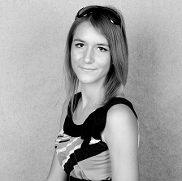

Luka Mustafa is a masters MEng Electronic Engineering with Communications Engineering MEng student at University College London (UCL) and working full-time on KORUZA development. In 2013 he received BEng degree at UCL with the project VALET. He is actively involved in wlan slovenija community wireless network and the construction, deployment and management of national and international wireless backbones. He actively pursuits the development of new and efficient systems by re-purposing mass-produced components and equipment and contributes to several electronics projects worldwide, with intern experience in particle accelerator control systems in Cosylab.

Eva Černčič holds a masters degree in applied mathematics from the Imperial College London (2013-2014) and has obtained a bachelors degree in mathematics from the University of Southampton in 2013. As an intern at the Jožef Stefan Institute of Science in Slovenia, she contributed to the development of an intelligent agent system and the statistical analysis of obtained data in the Department of Intelligent Systems. She is interested in the field of analytical fluid dynamics and aero-craft flight analysis, in which she also completed her masters thesis about the unsteady aerofoil dynamics.
Jernej Kos is a computer science researcher, software developer and network engineer with several years of experience. He enjoys working on interesting projects, specifically with backend architecture and low-level details. He has experience with scalable web application development, development of software for embedded devices, routing protocol internals and more. In 2005 he co-founded a software development and consultancy company specialising in the above fields. He is also involved with open source projects, the most prominent being wlan slovenija, where he has developed a modular platform for network monitoring and provisioning. His current research interests include secure, privacy-aware decentralised services and their uses.